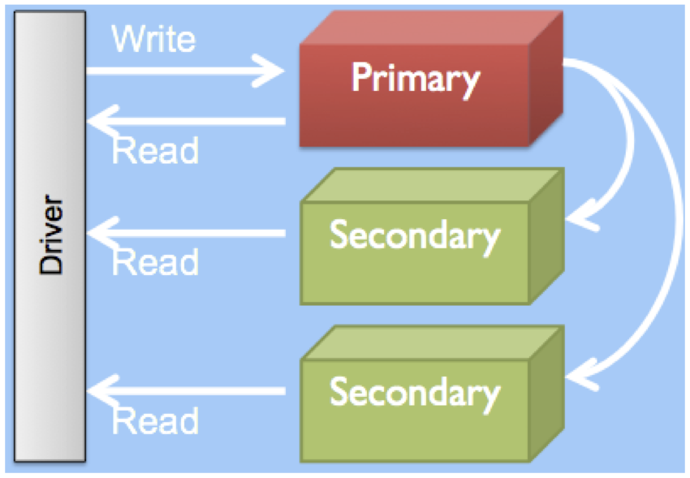
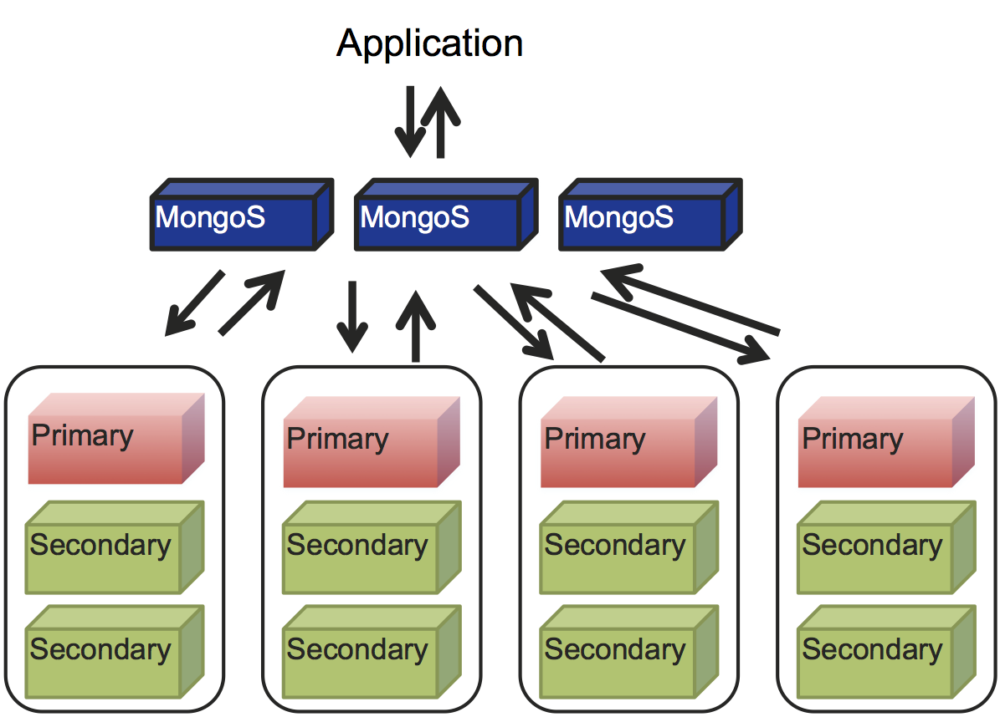

Backup, Restore and Disaster Recovery
@asya999Available Live
asya999.github.com/seattle2012backup
Agenda
Backup
Recover
Disaster Recovery
Know your options and stay on top of it
Backups
What's the most important thing about making backups?
???
Restoring them
If you don't ensure that your backups can be restored, there's not much point to doing backups
Backup Options
Mongodump
File System
Restore Options
Disaster Recovery
Backup Example: Sharded Cluster
Restore Example: Sharded Cluster
Tips
Scalable1
Scalable2
Scalable3
Scalable4
Scalable5
Replica Set
Scalable
Sharded Cluster
Database Landscape
Ruby?
MongoDB + Ruby

Matz
Ruby is designed to be human-oriented. It reduces the burden of programming. It tries to push jobs back to machines. You can accomplish more tasks with less work, in smaller yet readable code.Yukihiro Matsumoto
MongoDB is a database for programmersTyler Brock
Data vs. Objects
Relational databases store and query data
Programmers work with objects
Everything in Ruby is an object
Why not use a tool that was designed to work with objects?
Ruby Driver
Connect
@connection = Mongo::Connection.new("localhost", 27017)
@data = @connection.db("data")
@users = @data.collection("users")
Insert
tyler = {
:name => "Tyler",
:age => 27,
:langs => ["Ruby", "JavaScript"],
:addresses => {
:color => "Blue",
:number => 12,
:movies => ["Die Hard", "Inception"],
:drinks => ["Guaraná Antarctica"]
}
}
@users.insert(tyler)
Bulk Insert
people = [
{ :name => "Tyler", age: 27, ... }
{ :name => "Jessica", age: 30, ... }
{ :name => "Jon", age: 27, ... },
...
]
@users.insert(people)
Query
@users.find({ :name => "Tyler" }) # name = "Tyler"
@users.find({ :age => { "$lt" => 30 } }) # age < 30
@users.find({
:age => { "$lt" => 30 }, # ... AND ...
:langs => "Ruby", # look in array
"favorite.color" => "Blue" # reach into object
})
Update
tyler = @users.find_one({ :name => "Tyler" })
tyler.langs << "C++"
@users.save(tyler) # too late?
Atomic Update
@users.update(
{ :name => "Tyler" }, # query selector
{ :$push => { :langs => "C++" } } # update document
)
Atomic Modifiers
$inc, $set, $unset, $push, $pull, $pushAll, $pullAll, $rename, $pop, $addToSet, ...
Upsert
If we find a match, update, if not, merge and insert
@sites.update(
{ :url => "http://www.locaweb.com.br" },
{ :$inc => { :visits => 1 } },
:upsert => true)
Sorting
@users.find.sort(:age => :desc)
@users.find.sort({
:age => :desc,
:name => :asc
})
Indexing
@users.create_index( [[:age, -1], [:name, 1]] )
Replica Set
Mongo::ReplSetConnection.new([
'localhost:3000', 'localhost:3001', 'localhost:3002'
])
Sharded Cluster
Mongo::ShardedConnection.new([
'localhost:3000', 'localhost:30001', 'localhost:3002'
])
Concurrency and Parallelism in Ruby
Object Document Mappers
Mongoid
class Post
include Mongoid::Document
field :title, type: String
field :body, type: String
field :tags, type: Array
has_many :comments
end
class Comment
include Mongoid::Document
field :comment, type: String
belongs_to :posts
end
Blog Posts and Comments
# The parent Post document.
{
"_id": ObjectId("4d3ed089fb60ab534684b7e9"),
"title": "How the Internets were Won",
"body": "One day Tim Berners Lee...",
"tags": ["Internet", "Cool", "Adventure"]
}
# The child Comment document.
{
"_id": ObjectId("4d3ed089fb60ab534684b7f1"),
"comment": "Boring!"
"post_id": ObjectId("4d3ed089fb60ab534684b7e9")
}
Blog Posts and Comments (Stored)
class Post
include Mongoid::Document
field :title, type: String
field :body, type: String
field :tags, type: Array
embeds_many :comments
end
class Comment
include Mongoid::Document
field :comment, type: String
embedded_in :posts
end
Blog Posts and Embedded Comments
# Post and Comment stored in single collection (together)
{
"_id": ObjectId("4d3ed089fb60ab534684b7e9"),
"title": "How the Internets were Won",
"body": "One day Tim Berners Lee...",
"tags": ["Internet", "Cool", "Adventure"]
"comments": [
{
"_id": ObjectId("4d3ed089fb60ab534684b7e0"),
"comment": "Boring!"
}
]
}
Blog Posts and Embedded Comments (Stored)
Validations at the ORM level
class Comment
...
validates_presence_of :title
validates_numericality_of :views
...
end
MongoMapper
class Post
include MongoMapper::Document
key :title, String
key :body, String
key :tags, Array
key :views, Integer
validates_presence_of :title
validates_numericality_of :views
many :comments
end
class Comment
include MongoMapper::EmbeddedDocument
key :comment, String
end